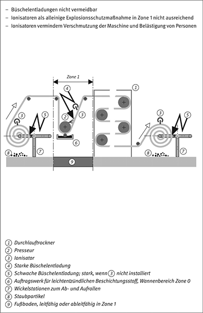

(1) Die gefährliche Aufladung von Gegenständen oder Einrichtungen in explosionsgefährdeten Bereichen ist zu vermeiden.
Hinweis:
Derartige Gegenstände oder Einrichtungen sind z. B. Rohre, Behälter, Folien, Anlagen und Apparateteile, einschließlich eventueller Beschichtungen, Auskleidungen, aber auch textile Gegenstände, z. B. Schlauchfilter.
(2) Andernfalls muss das Annähern eines Gegenstandes oder einer Person an gefährlich aufgeladene Oberflächen von Gegenständen oder Einrichtungen sicher vermieden werden. Stellt diese Annäherung die einzige Möglichkeit dar, eine zündwirksame Entladung auszulösen, kann in Zone 1 auf weitere Maßnahmen verzichtet werden, solange keine stark ladungserzeugenden Prozesse vorliegen.
Hinweis:
Stark ladungserzeugende Prozesse führen zu so starken Aufladungen, dass spontane zündwirksame Entladungen auftreten können.
(3) Der Gebrauch von Gegenständen oder Einrichtungen aus isolierenden Materialien in explosionsgefährdeten Bereichen ist zu vermeiden. Können Gegenstände oder Einrichtungen aus leitfähigen oder ableitfähigen Materialien nicht eingesetzt werden, sind Maßnahmen gegen gefährliche Aufladungen zu treffen.
Hinweis:
Mögliche Maßnahmen sind z. B. leitfähige oder ableitfähige Beschichtungen, leitfähige Fäden in Textilien, Oberflächenbegrenzungen oder auch sicher wirkende organisatorische Maßnahmen. Siehe auch Nummern 3.2 und 8.
(1) In explosionsgefährdeten Bereichen sind grundsätzlich nur leitfähige oder ableitfähige Gegenstände oder Einrichtungen zu verwenden.
(2) Je nach Zündwahrscheinlichkeit sind alle Gegenstände oder Einrichtungen aus leitfähigen Materialien zu erden und solche aus ableitfähigen Materialien sind mit Erdkontakt zu versehen. Die Erdung bzw. die Erdverbindung darf nur entfallen, wenn eine gefährliche Aufladung ausgeschlossen ist.
Hinweis 1:
Geerdete leitfähige Gegenstände können nicht gefährlich aufgeladen werden. Sind leitfähige Gegenstände von Erde isoliert, können Funkenentladungen auftreten.
Hinweis 2:
Hinsichtlich Erdung siehe auch Nummer 8.
(3) Hängt die Ableitfähigkeit eines Gegenstandes oder einer Einrichtung von Temperatur- oder Feuchteschwankungen der Luft ab, sind diese im Rahmen der zu erwartenden Betriebsbedingungen zu berücksichtigen.
Hinweis: Siehe auch Anhang A.
(1) Gegenstände aus isolierenden Materialien können durch Reiben oder infolge betrieblicher Vorgänge aufgeladen werden. Dies kann zu Büschel- oder Gleitstielbüschelentladungen führen. Beim Umgang mit isolierenden Gegenständen oder Einrichtungen sind in explosionsgefährdeten Bereichen andere Explosionsschutzmaßnahmen, z. B. Vermeiden explosionsfähiger Atmosphäre, zu ergreifen.
| 1. | Isolierende Gegenstände oder Einrichtungen dürfen in explosionsgefährdeten Bereichen nur benutzt werden, wenn gefährliche Aufladungen vermieden sind: | |
| a) | In den Zonen 0 und 20 auch bei seltenen Betriebsstörungen, | |
| b) | in den Zonen 1 und 21 auch bei Betriebsstörungen, mit denen üblicherweise zu rechnen ist oder bei Wartung und Reinigung und | |
| c) | in den Zonen 2 und 22 bei bestimmungsgemäßem Betrieb. | |
Hinweis:
An der Oberfläche isolierenden Materials können Büschelentladungen auftreten. Deren Energien reichen zwar für eine Entzündung explosionsfähiger Gas/Luft- oder Dampf/Luft-Gemische aus, jedoch nicht für die Entzündung von Staub/Luft-Gemischen unter atmosphärischen Bedingungen (siehe auch Nummer 6 „Elektrostatische Aufladungen beim Umgang mit Schüttgütern“).
| 2. | Werden isolierende Gegenstände oder Einrichtungen mit leitfähiger oder ableitfähiger Beschichtung eingesetzt, ist diese zu erden bzw. mit Erde zu verbinden. |
| 3. | Leitfähige oder ableitfähige Beschichtungen isolierender Gegenstände oder Einrichtungen in den Zonen 0 und 1 erfordern einen Nachweis ihrer dauerhaften Wirksamkeit. |
Hinweis:
Viele Materialien, die in der Vergangenheit als isolierend galten, z. B. Gummi oder Kunststoffe, sind mittlerweile in ableitfähigen Varianten erhältlich. Allerdings weisen diese Varianten in der Regel Additive auf, z. B. Ruß oder Graphit, welche die Eigenschaften des Ausgangsmaterials beeinträchtigen können.
| 4. | Bei textilen Gegenständen, in die leitfähige oder ableitfähige Fasern eingearbeitet sind, z. B. bei mit Kohlenstofffasern ausgerüsteten Filtergeweben, ist nach Reinigung oder nach besonderer Beanspruchung zu prüfen, ob die Leitfähigkeit bzw. Ableitfähigkeit über das gesamte Gewebe erhalten geblieben ist. Andernfalls ist sie wieder herzustellen. |
(2) Für die Auswahl geeigneter Gegenstände und Einrichtungen und für deren sicheren Betrieb in explosionsgefährdeten Bereichen sollen bevorzugt Maßnahmen in nachfolgender Reihenfolge gewählt werden:
(1) Zündgefahren durch Büschelentladungen sind in den Zonen 0, 1 oder 2 nicht zu erwarten, wenn
Hinweis:
Maßgeblich für isolierende Oberflächen:
(2) Maßnahmen nach den Tabellen 1a und 1b reichen bei stark ladungserzeugenden Prozessen nicht aus.
Hinweis 1:
Das Strömen von Flüssigkeiten und Suspensionen mit niedriger Leitfähigkeit, die Förderung von Stäuben durch Rohre oder Schlauchleitungen sowie das Sprühen von Elektronen und Ionen von Hochspannungselektroden sind stark ladungserzeugende Prozesse.
Hinweis 2:
An dünnen Gegenständen aus isolierenden Materialien, z. B. Folien und Schichten, können bei stark ladungserzeugenden Prozessen Gleitstielbüschelentladungen auftreten.
Tabelle 1a: Höchstzulässige Oberflächen isolierender Gegenstände
| Zone | Oberfläche (cm²) in Explosionsgruppen | ||
| IIA | IIB | IIC | |
| 0 | 50 | 25 | 4 |
| 1 | 100 | 100 | 20 |
| 2 | Maßnahmen nur erforderlich, wenn erfahrungsgemäß zündwirksame Entladungen auftreten. | ||
Tabelle 1b: Höchstzulässige Durchmesser oder Breiten langgestreckter isolierender Gegenstände
| Zone | Breite oder Durchmesser (cm) in Explosionsgruppen | ||
| IIA | IIB | IIC | |
| 0 | 0,3 | 0,3 | 0,1 |
| 1 | 3,0 | 3,0 | 2,0 |
| 2 | Maßnahmen nur erforderlich, wenn erfahrungsgemäß zündwirksame Entladungen auftreten. | ||
(3) Für Explosionsgruppe I beträgt die höchstzulässige Oberfläche 100 cm², die höchstzulässige Breite bzw. der höchstzulässige Durchmesser langgestreckter isolierender Gegenstände beträgt 3 cm.
(4) Da die Entwicklung unter anderem zu Werkstoffen – die sich nicht gefährlich aufladen lassen – geführt hat, kann an die Stelle des Flächenkriteriums auch der experimentelle Nachweis, dass der Gegenstand sich nicht gefährlich auflädt, treten. Ein solcher Nachweis erfordert eine fachkundige Prüfung.
Hinweis:
Dieser Nachweis kann z. B. über die Bestimmung des Ladungstransfers erbracht werden.
(5) Da Staub/Luft-Gemische durch Büschelentladungen nicht entzündet werden können, sind vergleichbare Flächenkriterien für die Zonen 20, 21 oder 22 nicht erforderlich.
Hinweis:
sicherheitstechnische Überlegungen zu Staub/Luft-Gemischen siehe auch Nummer 6.
Können die höchstzulässigen Abmessungen nach Nummer 3.2.1 zur Vermeidung von Büschelentladungen nicht eingehalten werden, lassen sich gefährliche Aufladungen mit Hilfe geerdeter leitfähiger oder ableitfähiger Netze, Rahmen etc. vermeiden. Sie sorgen für eine ausreichende Abschirmung, wenn die Größe der gebildeten Teilflächen und die Einbauart des Netzes oder Rahmens eines der beiden folgenden Kriterien erfüllt:
Hinweis: Ein eingebautes Netz oder ein eingebauter Rahmen aus leitfähigem oder ableitfähigem Material bieten bei stark ladungserzeugenden Prozessen keinen Schutz gegen Gleitstielbüschelentladungen.
3.2.3.1 Begrenzung der Beschichtungsdicke
Die Dicke isolierender Beschichtungen soll für
Der leitfähige oder ableitfähige Teil des Gegenstandes muss bei der Handhabung geerdet sein.
Hinweis: Durch diese Maßnahmen werden Büschelentladungen in der Regel verhindert. Bei stark ladungserzeugenden Prozessen können jedoch Gleitstielbüschelentladungen auftreten.
3.2.3.2 Begrenzung der Durchschlagspannung
(1) Gleitstielbüschelentladungen können vermieden werden, wenn die Durchschlagspannung dünner isolierender Schichten 4 kV nicht überschreitet.
Hinweis:
Beschichtungen mit einer ausreichend geringen Durchschlagspannung, z. B. Farbanstriche, werden elektrisch durchschlagen, bevor sich eine für eine Gleitstielbüschelentladung ausreichende Ladungsmenge ansammeln kann. Zur Begrenzung der Durchschlagspannung textiler Gewebe, z. B. FIBC, siehe auch Anhänge A3.4 und C.
(2) Bei Gasen und Dämpfen der Explosionsgruppe IIC sind zusätzliche Maßnahmen zur Vermeidung von Entzündungen zu treffen, sofern stark ladungserzeugende Prozesse nicht ausgeschlossen sind.
3.2.3.3 Trennen isolierender Folien von festen Grundkörpern
(1) Das Abziehen isolierender Folien von festen Grundkörpern muss außerhalb der Zonen 0 und 1 erfolgen.
Hinweis:
Bei Arbeitsprozessen, z. B. Abziehen von Schrumpffolien von Packmitteln, können gefährliche Aufladungen auftreten.
(2) In Zone 2 darf das Abziehen isolierender Folien nur dann erfolgen, wenn dabei keine zündwirksamen Entladungen auftreten.
Hinweis:
Die Beurteilung der Zündwirksamkeit kann gemäß Nummer 3.2.1 oder 3.2.4 erfolgen.
(1) Die von einem Gegenstand maximal übertragene Ladung darf in Zone 1 und 2 die folgenden Werte nicht überschreiten:
Hinweis 1:
Der Prüfgegenstand wird möglichst hoch aufgeladen und eine Entladung zu einer Kugelelektrode eines Coulombmeters provoziert.
Hinweis 2:
Der Grenzwert von 25 nC wurde festgelegt, um für die Explosionsgruppen IIA, IIB und IIC einen einheitlichen Sicherheitsabstand herzustellen. Ältere Gegenstände, die auf der Basis des alten Grenzwertes von 30 nC zugelassen wurden, müssen nicht erneut geprüft werden.
(2) In Zone 0 gelten an Stelle der in (1) angegebenen Werte die folgenden:
| 1. | für Explosionsgruppe IIA: 25 nC, |
| 2. | für Explosionsgruppe IIB: 10 nC, |
| 3. | für Explosionsgruppe IIC: Es dürfen keine Entladungen detektierbar sein. |
(3) Für Explosionsgruppe I darf die von einem Gegenstand maximal übertragene Ladung 60 nC nicht überschreiten.
(4) Folgende Maßnahmen können die von isolierenden Flächen übertragene Ladung reduzieren:
Durch Erhöhung der relativen Feuchte kann der Oberflächenwiderstand verringert werden. Eine Erhöhung der relativen Feuchte darf nicht als alleinige Maßnahme in Zone 0 angewendet werden.
Hinweis:
Die Oberfläche vieler isolierender Materialien kann durch die Anlagerung von Wasser aus der feuchten Luft ableitfähig werden. Während z. B. Glas oder Naturfasern diese Eigenschaft besitzen, trifft dies jedoch für viele andere Materialien, wie Polytetrafluorethylen oder Polyethylen, nicht zu. Feuchte Luft selbst ist isolierend.
Durch Ionisierung der Luft kann manchmal eine gefährliche Aufladung isolierender Gegenstände lokal vermieden werden. Dieses Verfahren eignet sich z. B. zur Neutralisation elektrischer Ladungen auf Kunststoffplatten oder -schichten. Die Wirksamkeit der Ionisierungseinrichtungen ist regelmäßig zu prüfen.
3.2.6.1 Passive Ionisatoren
Passive Ionisatoren dürfen bei Gefahrstoffen der Explosionsgruppe IIC nicht angewendet werden. Sie sind allein keine ausreichende Maßnahme in Zone 0.
Hinweis:
Passive Ionisatoren sind geerdete spitze Elektroden, z. B. feine Nadeln, dünne Drähte oder leitfähige Litzen. Sie neutralisieren durch Koronaentladung elektrische Ladungen auf der Oberfläche eines aufgeladenen Gegenstandes nur, solange die Anfangsfeldstärke überschritten ist. Stark verschmutzte passive Ionisatoren können zu Entzündungen führen.
3.2.6.2 Aktive Ionisatoren
(1) Aktive Ionisatoren eignen sich, lokale Ladungsansammlungen zu neutralisieren. Ihre Wirksamkeit hängt wesentlich von der richtigen Auswahl, Positionierung und von der regelmäßigen Reinigung der Ionisatoren ab.
Hinweis:
Zur Wartung gehört auch die regelmäßige Reinigung der emittierenden Seite der Ionisatoren.
(2) Aktive Ionisatoren dürfen bei Gefahrstoffen der Explosionsgruppe IIC und darüber hinaus in Zone 0 nicht angewendet werden.
Hinweis:
Bei einem aktiven Ionisator wird üblicherweise eine hohe Spannung an koronaerzeugende Spitzen angelegt. Handelsübliche Systeme verwenden in der Regel Wechselspannung in einem Bereich zwischen 5 kV und 15 kV.
3.2.6.3 Radioaktive Ionisatoren
(1) Die Dauer der Wirksamkeit radioaktiver Ionisatoren ist wegen der Halbwertszeit der radioaktiven Präparate begrenzt.
(2) Radioaktive Ionisatoren dürfen nicht in Zone 0 verwendet werden.
Hinweis:
Radioaktive Stoffe ionisieren die umgebende Luft und können zur Ableitung elektrischer Ladungen von einem aufgeladenen Gegenstand eingesetzt werden.
3.2.6.4 Gebläse mit ionisierter Luft
Gebläse mit ionisierter Luft dürfen nicht in Zone 0 verwendet werden.
Hinweis: Zunächst wird die Luft mit einer der vorgenannten Methoden ionisiert und anschließend durch ein Gebläse an den Verwendungsort gebracht. Dieses Verfahren eignet sich zur Ableitung elektrischer Ladungen von Gegenständen mit kompliziert geformter Oberfläche. Innerhalb des Luftstromes ist die schnelle Abnahme der Ionenkonzentration zu berücksichtigen. Die Ionisation der Luft ist beim Transport über Distanzen von mehr als 10 cm oft schwer aufrecht zu erhalten.
(1) Folien- und Papierbahnen können unter anderem beim Laufen über Walzen gefährlich aufgeladen werden.
(2) Diese Aufladung entsteht beim Abheben oder Trennen des isolierenden Trägermaterials von der Unterlage oder von den Führungs- und Druckelementen, z. B. beim Abwickeln von der Rolle bei Rollenmaschinen, beim Lauf des Trägermaterials über Führungs- und Leitwalzen, beim Austritt der bedruckten bzw. beschichteten Bahn aus dem Druck- bzw. Auftragswerk.
Hinweis: Erfahrungsgemäß ist an Tief- und Flexodruckmaschinen das bedruckte Trägermaterial nach seinem Austritt aus dem Druckwerk, d. h. in unmittelbarer Nähe des Farbkastens, insbesondere beim Einsatz elektrostatischer Druckhilfen am stärksten aufgeladen. Die Farbe selbst wird durch den in ihr rotierenden Zylinder beträchtlich aufgeladen, wozu ihre dispergierten Feststoffanteile stark beitragen.
(3) Die Aufladung beim Drucken und Beschichten ist so gering wie möglich zu halten. Folgende Parameter beeinflussen ihre Höhe:
(4) Aufladungen können durch folgende Maßnahmen vermieden werden:
Hinweis: In vielen Fällen reichen die genannten Maßnahmen nicht aus; dann ist die explosionsfähige Atmosphäre zu vermeiden (z. B. durch technische Lüftung).

Beispiel 1: Beschichten und Bedrucken isolierender Folien
(1) Der kontinuierliche Trennvorgang zwischen den Trommeln und dem Fördergurt kann beträchtliche Ladungsmengen auf den bewegten Oberflächen und dabei gefährliche Aufladungen erzeugen. Die Aufladung hängt vom spezifischen Widerstand der verwendeten Werkstoffe ab. Sie steigt mit der Geschwindigkeit, der Zugspannung sowie der Breite der Berührungsfläche. Die vom Gurtband aufgenommene Ladung kann nur über die geerdeten leitfähigen Rollen oder Trommeln sicher abgeleitet werden, wenn der Fördergurt ausreichend ableitfähig ist.
Hinweis:
Normalerweise wird ein Fördergurt aus isolierendem Material gefertigt, wohingegen Antriebstrommel und Tragrollen aus leitfähigem Material bestehen.
(2) Ein Fördergurt heißt ableitfähig, wenn die Oberflächenwiderstände der Ober- und Unterseite des Bandes weniger als 3 · 108 Ω betragen. Die Messung des Oberflächenwiderstands erfolgt bei 23 °C und 50 % relativer Luftfeuchte mit einer inneren kreisförmigen Elektrode von 25 mm Durchmesser und einer äußeren Ringelektrode mit 125 mm innerem und 150 mm äußerem Durchmesser. Wird der Oberflächenwiderstand mit der Elektrode nach Nummer 2 Absatz 6 gemessen, muss der so erhaltene Messwert mit einem Faktor 4 multipliziert werden. Besteht der Gurt aus Schichten unterschiedlicher Materialien, wird er nur als ableitfähig betrachtet, solange sein Durchgangswiderstand senkrecht zu den Schichten 109 Ω nicht überschreitet.
(3) In explosionsgefährdeten Bereichen dürfen nur ableitfähige Fördergurte eingesetzt werden. Diese sind über leitfähige, geerdete Rollen und Trommeln zu führen.
(4) Gurtverbinder sind in Bereichen der Zone 0 nicht zulässig. Gleiches gilt in Zone 1 bei Gasen oder Dämpfen der Explosionsgruppe IIC sowie – soweit diese zulässig ist – bei einer Bandgeschwindigkeit von mehr als 5 m/s.
(5) Reparaturen ableitfähiger Fördergurte dürfen den Widerstand nicht erhöhen.
(6) Es gelten die Höchstgeschwindigkeiten und Anforderungen der Tabelle 2.
Tabelle 2: Anforderungen an Fördergurte und Antriebsriemen in Abhängigkeit von Ex-Zone und Gurt-/Riemengeschwindigkeit
| Explosions- gefährdeter Bereich |
Band- bzw. Antriebsriemengeschwindigkeit | ||
| ≤ 0,5 m/s | 0,5—5 m/s | 5—30 m/s | |
| Zone 0 | ableitfähiger* Gurt/Riemen und leitfähige Riemenscheiben zulässig, Gurt-/Riemenverbinder nicht zulässig |
Betrieb der Gurte und Riemen mit diesen Geschwindigkeiten nicht zulässig | |
| Zone 1 Explosionsgruppe IIA, IIB |
ableitfähiger* Gurt/Riemen und leitfähige Riemenscheiben, Gurt-/Riemenverbinder zulässig |
ableitfähiger* Gurt/Riemen und leitfähige Riemenscheiben zulässig Gurt-/Riemenverbinder nicht zulässig |
|
| Zone 1 Explosionsgruppe IIC |
ableitfähiger* Gurt/Riemen und leitfähige Riemenscheiben zulässig, Gurt-/Riemenverbinder nicht zulässig | Betrieb der Gurte und Riemen mit diesen Geschwindigkeiten nicht zulässig | |
| Zone 2 | keine zusätzlichen Anforderungen zu Nummer 3.4 (1), Maßnahmen nur erforderlich, wenn erfahrungsgemäß zündwirksame Entladungen auftreten. |
||
| Zone 20 und MZE < 10 mJ |
ableitfähiger* Gurt/Riemen und leitfähige Riemenscheiben, Gurt-/Riemenverbinder zulässig | Betrieb der Gurte und Riemen mit diesen Geschwin-digkeiten nicht zulässig | |
| Zone 20 und MZE > 10 mJ |
ableitfähiger* Gurt/Riemen und leitfähige Riemenscheiben, Gurt-/Riemenverbinder zulässig | ableitfähiger* Gurt/Riemen und leitfähige Riemenscheiben zulässig, Gurt-/Riemenverbinder nicht zulässig |
|
| Zone 21 | ableitfähiger* Gurt/Riemen und leitfähige Riemenscheiben, Gurt-/Riemenverbinder zulässig | ableitfähiger* Gurt/Riemen und leitfähige Riemen- scheiben zulässig, Gurt-/Riemenverbinder nicht zulässig |
|
| Zone 22 | keine zusätzlichen Anforderungen zu Nummer 3.4 (1), Maßnahmen nur erforderlich, wenn erfahrungsgemäß zündwirksame Entladungen auftreten. | ||
| * ableitfähiger Gurt nach der Definition von Nummer 3.4 (2), ableitfähiger Antriebsriemen nach der Definition von Nummer 3.5 (2) oder (3) | |||
(7) Für Explosionsgruppe I gelten die gleichen Werte wie für Explosionsgruppe IIA.
(8) Für Bandgeschwindigkeiten v > 30 m/s liegen keine Erfahrungen vor.
(1) Der kontinuierliche Trennvorgang zwischen dem Antriebsriemen und der Riemenscheibe kann beträchtliche Ladungsmengen auf den bewegten Oberflächen und dabei gefährliche Aufladungen erzeugen. Die Aufladung hängt vom spezifischen Widerstand der verwendeten Werkstoffe ab. Sie steigt mit der Geschwindigkeit, der Zugspannung sowie der Breite der Berührungsflächen.
Hinweis:
Antriebsriemen sind Keilriemen, Zahnriemen und Flachriemen, die rotierende Teile oder Maschinen antreiben. Die Materialien, aus denen der Riemen gefertigt ist, sind häufig isolierend, während die Riemenscheiben normalerweise aus Metall sind.
(2) Ein Antriebsriemen heißt ableitfähig, wenn für den Riemen gilt:
R · B / L ≤ 6 · 105 Ω
| mit | R = Widerstand des Antriebsriemens zwischen zwei Elektroden |
| B = Bei Flachriemen die Riemenbreite, bei Keilriemen die doppelte Flankenbreite | |
| L = Abstand der beiden Elektroden |
(3) Besteht der Antriebsriemen aus Schichten unterschiedlicher Materialien, wird er nur dann als ableitfähig betrachtet, wenn zusätzlich sein Durchgangswiderstand senkrecht zu den Schichten den Wert von 109 Ω nicht überschreitet.
Hinweis:
Die Widerstandsmessung erfolgt bei 23 °C und 50 % relativer Luftfeuchte.
(4) In explosionsgefährdeten Bereichen dürfen nur ableitfähige Antriebsriemen eingesetzt werden. Sie sind über leitfähige, geerdete Riemenscheiben zu führen.
(5) Riemenverbinder sind nicht zulässig in Bereichen der Zone 0. Gleiches gilt in Zone 1 bei Gasen oder Dämpfen der Explosionsgruppe IIC sowie – soweit diese zulässig ist – bei einer Antriebsriemengeschwindigkeit von mehr als 5 m/s.
(6) Haftwachs oder isolierende Klebstoffe dürfen die Ableitfähigkeit der Antriebsriemen nicht herabsetzen.
(7) Reparaturen ableitfähiger Antriebsriemen dürfen den Widerstand nicht erhöhen.
(8) Für Antriebsriemen gelten die Höchstgeschwindigkeiten und Anforderungen der Tabelle 2.
(9) Für Explosionsgruppe I gelten die gleichen Werte wie für Explosionsgruppe IIA.
(10) Erfahrungen bei Antriebsriemengeschwindigkeiten v > 30 m/s liegen nicht vor.